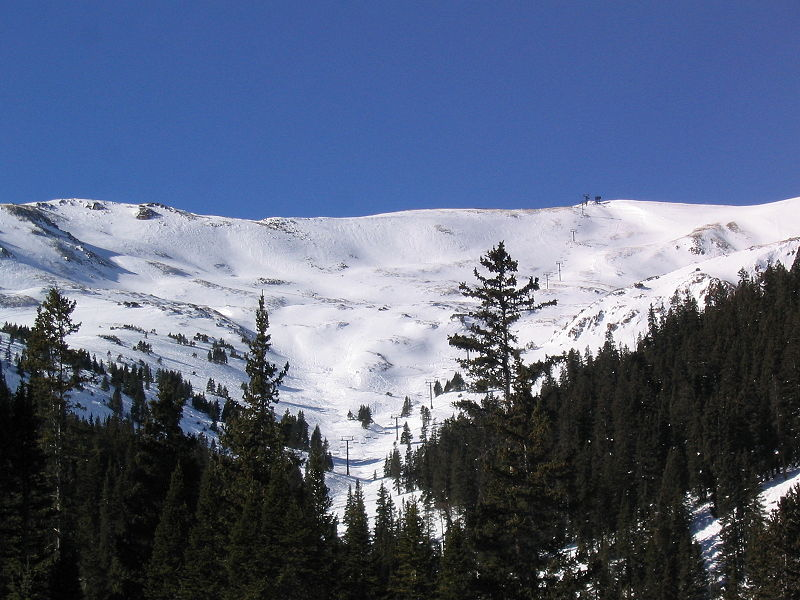

Loveland Ski Area is a great place to ski. It has 2 main area: the Valley, which is perfect for beginners and families, and the Basin, which has trails for all levels. At the Basin, you get started by heading up the high-speed lift, Chet's Dream. From there, the possibilities for what's next seem endless!
